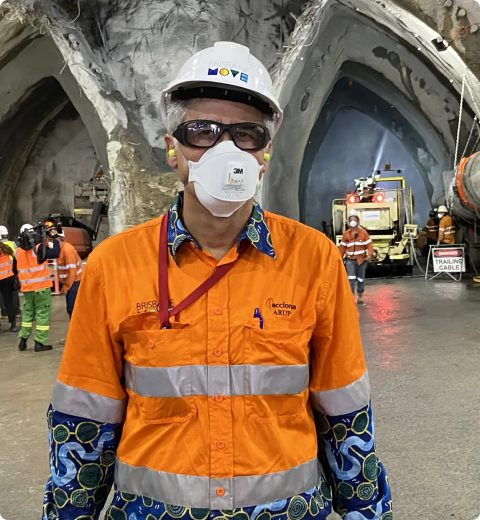

The Operational Intelligence Framework
How Leading Organisations Create Better Operational Understanding
Research, Insights And Operational Intelligence Frameworks
Operations are becoming increasingly connected, data-rich and complex.
Our articles explore the technologies, operational challenges and emerging trends shaping the future of safety, productivity and operational performance.
How Leading Organisations Create Better Operational Understanding
A Guide To Creating A Shared Operational Understanding
Understanding Exposure Before Incidents Occur
Understanding The Factors Influencing Operational Performance
A Guide To Creating A Shared Operational Understanding
Understanding Exposure Before Incidents Occur


Download research, frameworks and practical guidance designed to help organisations improve safety, productivity and operational performance.